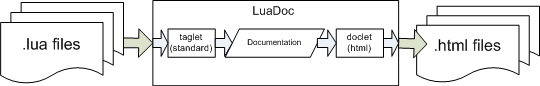

Architecture
LuaDoc's processing can be divided in two distinct steps: parsing and
generation. The parsing step take as input a set of .lua files
and must produce a Documentation object. A generator takes a
Documentation object as input and produces a set of output files.
It's up to the generator to decide which output format it will generate.
The parsing step is executed by a component called
taglet, while the generation is handled by a
component called doclet. This architecture is
shown below.

Taglet
LuaDoc does not impose a documentation format. It does relies on an internal
representation of the documentation. This representation is described in the
Documentation section. If the developer wants to
use a custom documentation format the taglet component can be
replaced.
Writing a new taglet is a matter a implementing a single method:
function start (files, doc)
- files
- a list of file (or directory) names.
- doc
- a preprocessed documentation object.
LuaDoc comes bundled with a standard taglet implementation. This implementation
takes all file names in the list and produce the documentation object using a set
of tags described in the section How To. If an
item in the list is a directory it iterates recursively throw all files in the
directory looking for filenames with .lua or .luadoc
extensions.
Documentation
Instead of defining a documentation format LuaDoc defines an internal representation of a documentation object. Taglets and doclets must conform with this format.
The documentation object is described below. Some description elements are explained below:
- List
- table indexed by number. Example: List<string> { [1] = "x", [2] = "y", [3] = "z", }
- HashMap
- table whose numerical indices are the key values for objects. Example: HashMap<string, string>
{ [1] = "x", [2] = "y"; [3] = "z"; ["x"] = "x coord", ["y"] = "y coord", ["z"] = "z coord", }
DOCUMENTATION
{
files = HashMap<string, DOCUMENTATION_ELEMENT>, -- indexed by file name
modules = HashMap<string, DOCUMENTATION_ELEMENT>, -- indexed by module name
}
DOCUMENTATION_ELEMENT
{
type = ["file" | "module"],
name = <string>, -- full path of file or name of module
doc = List<BLOCK>, -- all documentation blocks
functions = HashMap<string, BLOCK>, -- only functions, indexed by function name
tables = HashMap<string, BLOCK>, -- only table definitions, indexed by table name
},
}
BLOCK
{
class = ["module" | "function" | "table"],
name = <string>,
summary = <string>,
description = <string>,
comment = List<string>,
code = List<string>,
param = HashMap<string, string>,
},
Doclet
The primary job of an doclet is to take a
Documentation object and generate some kind of output.
LuaDoc is bundled with an implementation that generates HTML files.
Writing a new doclet is a matter a
implementing a single method:
function start (doc)
- doc
- a documentation object.